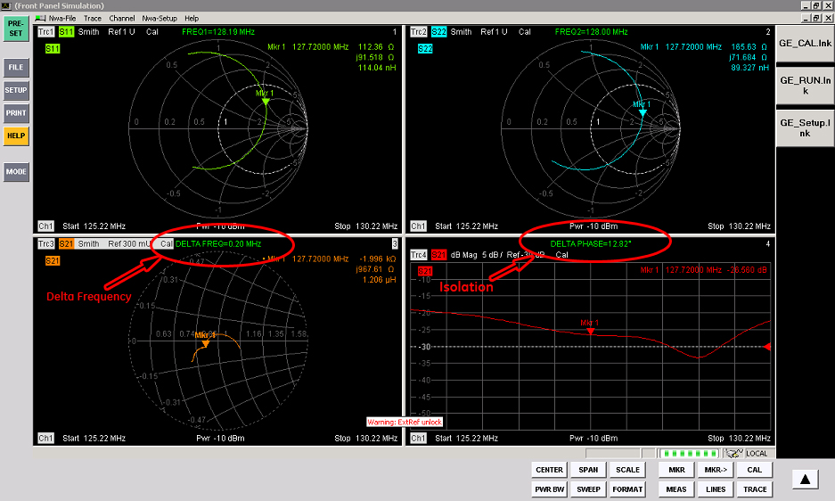

Operating Documentation
Direction 5670006, Rev# 1
Discovery MR750w GEM Service Methods
Module Version 5.0, Version Date 11/13/09
Operating Documentation |
| Required Persons | Preliminary Reqs | Procedure | Finalization |
|---|---|---|---|
| 2 | Not Applicable | 4 to 6 | Not Applicable |
This document covers the replacement of the 3.0T Twin RF Body Coil shown in Illustration 1. There are two part numbers for the replacement coil, based on color only. Make a note of the original coil part number so the proper replacement coil is ordered.
This procedure includes the following sections:
Illustration 1: Rear View of Twin RF Coil Removed from Gradient Coil

| Item | Qty | Effectivity | Part# | Manufacturer | |
|---|---|---|---|---|---|
| Personal Protection Equipment (PPE) | 1 | - | - | - | |
| Composed of : | |||||
| Gloves | 1 | - | - | - | |
| Safety Glasses | 1 | - | - | - | |
| Safety Shoes | 1 | - | - | - | |
| Long Sleeve Shirt and Pants | 1 | - | - | - | |
| 5 Gallon Bucket to collect coolant | 1 | - | 2239133 | - | |
| Authorized Personnel Floor Sign | 1 | - | 2289812 | - | |
| Non-Magnetic Tool Kit | 1 | - | 5112581 | - | |
| Item | Qty | Effectivity | Part# | Manufacturer |
|---|---|---|---|---|
| Gradient Chiller Coolant (1 gallon container) | 1 | - | 2297672 | - |
| Absorbent Towels (to clean coolant spillage) | 1 Pack | - | - | - |
| Adhesive | 1 | - | 46-220312P1 | - |
| Anti-Seize | 1 | - | 2119594 | - |
| Item | Qty | Effectivity | Part# | Manufacturer | |
|---|---|---|---|---|---|
| 3.0T RF Body Coil and FRU Case (G3, HD, and HDx Upgrade Systems) | 1 | - | 2208999-7 | - | |
| ||||
| Strong Magnetic Field! | ||||
| Ferrous materials can become dangerous projectiles in the presence of the magnetic field Produced by the Signa Magnet. | ||||
| Do not Bring any ferromagnetic tools or equipment into the magnet room. |
| ||||
| Dangerous Work Area! | ||||
| Use of heavy equipment for coil removal and replacement presents hazards to all personnel in the area. | ||||
|
| Condition | Reference | Effectivity |
|---|---|---|
With the patient transport docked, move the carriage to the rear of the magnet by pressing the [In Fast] button on the enclosure. | - | - |
Undock and move patient transport out of the way of the front cover of the magnet.
Remove the two rear pedestal magnet corner covers as described in Illustration 2.
Illustration 2: Magnet Corner Covers

Remove the rear pedestal covers as shown in Illustration 3.
Illustration 3: Rear Covers

To remove four screws from the top of the carriage cover, refer to Illustration 5.
Lift the carriage cover from the carriage.
Lift the tension arm to release tension from the carriage drive belt as shown in Illustration 4.
Illustration 4: Right Side View of Rear Pedestal (Viewed from Rear)

Unclamp both ends of the belt by removing the four screws holding down the two belt clamp plates. (See Illustration 5.)
Illustration 5: Belt Clamp Plates

Detach the two parts of the split bridge by removing the four (4) M10 nuts holding the two sections together.
To remove the front bridge cover:
Remove the two (2) M6 Phillips screws securing the cover to the front bridge.
Remove the front bridge cover, and set aside in a safe location out of the way of traffic.
To detach the front bridge support from the front end bell:
Loosen the lock nuts at the bottom of the support legs.
Remove the two (2) M10 bolts using an adjustable wrench or a 17 mm socket wrench.
| NOTE: | It is not necessary to detach the bridge support from the bridge. |
Slide the long section of the bridge out of the magnet bore.
Optional: If the system has the optional Integrated Patient Comfort Module (IPCM), remove the following items:
Disconnect the 1.5 inch hose from the right and left bore liner. (See Illustration 6.)
Illustration 6: IPCM Components in RF Body Coil

Refer to Illustration 7. Disconnect the fiber optic cables from the fiber optic control board. Remove the left rear skirt cover, turn latch holding light source assembly 1/4 turn clockwise, and pull assembly out of left rear magnet leg.
Illustration 7: Fiber Optic Assembly

Loosen the Rear Arc Cover if necessary to move the fiber optic cables to the back of the RF Body Coil.
Remove the two set screws at the back end of the trim piece.
Pull the trim piece out from the front of the bore.
Lift and remove each bore liner out of the RF Body Coil.
Remove the nylon nuts holding the bore liner supports, and remove each Bore Liner Support from the RF Body Coil.
Set the System Cooling Cabinet (SCC) to “Service mode” by flipping the toggle switch from the top position to the bottom position. (This will prevent the Magnet Monitor from dialing out.)
Turn SCC off and perform LOTO.
Turn off the gradient cooling lines (inlet and outlet) at the valve located in front of the magnet.
Remove both coolant lines from the coil, and allow them to drain into a bucket or container.
To disconnect the coaxial cables from the RF Body Coil:
Remove the two (2) coaxial bias lines labeled J3/J5 and J4/J6 at the front and rear of the RF Body Coil.
Remove the two (2) rigid, blue coaxial RF Drive Cables from the bulkhead at the rear of the RF Body Coil.
Remove the front and rear cover straps located at the interface between the front and rear end bells and the RF Body Coil.
Make sure the six feet are retracted. Use a non-magnetic 5/16 in. slot screwdriver or hex Allen wrench tool if the feet need to be retracted. (The feet are located at the 4, 8 and 12 o'clock positions on each end of the RF Body Coil. See Illustration 8.)
Illustration 8: Location of RF Body Coil Feet

To remove the bore light caps at the 10 and 2 o’clock positions on the front end bell (not applicable if the IPCM option is installed):
Remove the M4 screws securing each cap to the front end bell.
Remove the bore light caps, and relocate to a safe location out of the way of traffic.
Carefully detach (peel) the bore lights from the RF Body Coil inner surface.
Remove the bore temperature sensor cable from the groove in the front end bell.
Open the access panels on the front end bell by removing the 8 M6 screws with a flat-head screwdriver (typical at two locations).
| NOTE: | Coolant spillage may occur in the next step. Have absorbent towels available if this happens. |
Detach the four (4) gradient coolant lines from the inside of the end bell (push connectors). To minimize spillage, fold the lines back onto themselves and temporarily secure them into this position with rope-cord or adhesive tape.
Remove the twenty-four (24) M10 bolts in a star pattern on the front end bell using an 8 mm Allen wrench.
Completely slide out the end bell.
Loosen the house screw and remove it to allow the coil to slide out without touching the house screw.
Slide the RF Body Coil out of the Gradient Coil. (Refer to Illustration 9.)
Illustration 9: Sliding RF Body Coil Out onto Tracks

Carefully remove the existing gaskets from the front and rear ends of the old RF Body Coil and set aside, noting which gasket goes on each end of the RF Body Coil.
Do not pull these gaskets off the ends of the old RF Body Coil. They may have been tacked onto the ends of the coil with a small amount of adhesive. Be sure to have the RF Body Coil out of the magnetic field, and carefully cut the gasket off the old coil where it may be tacked onto the fiberglass.
Confirm that the gasket surface that contacts the RF Body Coil is in good condition (not nicked, cut, severely deformed or otherwise damaged) and will not leak if subjected to a vacuum.
Attach the gasket material to the new coil. The gasket material will be held in place with the new coil short studs. If required, use contact cement or a similar adhesive to attach the gasket to the outer edge of the new coil in 10 to 12 locations.
Confirm that the legs at the 4, 8 and 12 o’clock positions on each end of the RF Body Coil are fully retracted and flush with the coil surface. (These legs can only be adjusted with an Allen wrench.)
Refer to Illustration 10 and install the replacement RF Body Coil.
| NOTE: | Ensure that the legs on each end of the RF Body Coil do not catch on the edge of the fiberglass straps in the center of the gradient coil or tear the reflective Thermal Radiation Shield (TRS) film exposed on the inside, front of the gradient coil. |
Illustration 10: Sliding New RF Coil into Place

Insert the coil into the bore until the RF coil surface contacts the rear end bell.
Mark the I channel cable (connected to the top port of the body hybrid splitter) at the body hybrid splitter before disconnecting any cables (see Illustration 11).
Illustration 11: Mark Body Coil I Channel Cable

Disconnect the I and Q body coil cables from the Hybrid splitter.
Connect 7/16 adaptor to the cable from port 1 of the Network Analyzer and connect it to the body coil I channel (originally connected to J3).
Connect 7/16 adaptor to the cable from port 2 of the Network Analyzer and connect it to the body coil Q channel (originally connected to J4).
From NWA-Setup drop-down menu, go to External Tools, and select GE_RUN. After GE_RUN has completed, the results for baseline S-parameters, Delta Frequency and S21 Isolation will appear at the top of the windows. See Illustration 12.
Illustration 12: Baseline Parameters

From the front end bell access panels, reconnect the four (4) gradient coolant lines.
Replace the house screw in the proper position and tighten.
Replace the front end bell access panels, and secure using the eight (8) M6 screws.
Reinstall the bore temperature sensor cable into the groove in the front end bell.
Coil the excess cable, leaving about 2 feet of the cable end free, and tie-wrap the cable to the studs securing the SRI to the magnet face.
Reinstall the bore lights onto the inside surface of the RF Body Coil. Use double-sided tape if necessary (not applicable if the IPCM option is installed).
Reinstall the bore light caps using the two (2) M4 screws at the 10 and 2 o’clock positions on the front end bell (not applicable if the IPCM option is installed).
Reinstall the front and rear cover straps to the end bell interfaces at the front and rear RF Body Coil (not applicable if the IPCM option is installed).
To reconnect the coaxial cable bias and RF Drive Lines:
Reconnect the front and rear pair of coaxial cable bias lines labeled J3/J5 and J4/J6.
Reconnect the pair of rigid, blue coaxial cable I and Q RF Drive Lines at the rear of the RF Body coil to the connectors on the bulkhead interface.
Place the gradient coolant line valves behind the magnet in the “open” position.
Optional: If the system has the optional IPCM, do the following:
Re-install the Bore Liner Supports and attach using the nylon nuts. (See Illustration 6.)
Re-install the right and left side Bore Liner.
Insert the trim piece.
Secure the trim piece by inserting the set screws at the back end of the trim piece.
Connect the fiber-optic cables to the fiber-optic control board.
Tighten the rear arc cover if necessary.
Connect the 1.5 inch hose to each bore liner.
Restore system by resuming LOTO procedure sequence.
Verify the gradient chiller is running, check the coolant level, and replenish coolant as necessary.
View the fittings through the transparent window on the front end bell, and confirm that none of the fittings are leaking coolant.
Check the gradient coolant valves behind the magnet, and confirm that these are also not leaking.
To reinstall the bridge into the bore:
Slide the long section of the bridge back into the bore.
Secure the front bridge support to the end bell using the two (2) M10 bolts.
Tighten the lock nuts on the M10 bolts.
If the system has a split bridge, move the rear pedestal until the two parts of the bridge are engaged. Secure the four (4) M10 nuts with an adjustable wrench.
Replace front Aesthetic Ring (no tools required).
Replace the front bridge cover and secure using two (2) M6 Phillips screws.
Flip the toggle switch on the SCC cabinet back to the upper position so the Magnet Monitor will be able to dial out.
Verify that the system is functional by completing one head and body scan.
Dispose of excess gradient coolant drained earlier from the gradient coil according to local ordinances and regulations.
Install the cover on the front of the cabinet containing the PDU.